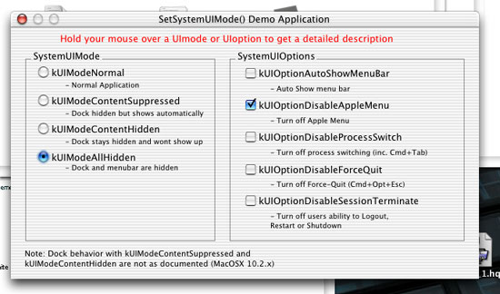
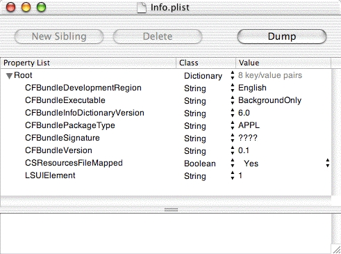

|
|
Developers working in certain markets need to add kiosk
features to their applications. That is the ability to lock the user into a
certain application or disable certain functionality normally available in
the operating system.
This technote shows several techniques for building kiosks or incorporating kiosk-like behavior into an application. This technote focuses on
Mac OS X 10.2 and later because that system introduced key APIs to support
kiosk development. The text describes which system versions are required for
each technique.
[Feb 24 2003]
|
|
IMPORTANT:
The techniques discussed in this technote is intended
only for developers who are working with a vertical
market which requires kiosk behavior. These techniques should
not be used by developers targeting the mass market of
regular Mac OS X users.
|
Introduction
Developers working in vertical markets (for example Education) have been creating kiosks or adding kiosk behavior to their
applications for quite some time. Specifically, this means the ability to lock
the user into a certain application or disable certain operating system
functionality normally available. Developers requiring kiosk behavior on
computer systems have often been forced to use "jury-rigged" solutions which
often were quite hard to maintain in the long term. With the advent of Mac OS X 10.2,
creating kiosks and adding kiosk functionality to an existing application has
become much easier to implement and support.
This technote will cover
several techniques required by kiosk developers as well as answer commonly
asked questions by developers of kiosk solutions.
Features of the SystemUIMode API
In Mac OS X 10.2 two important
kiosk-related APIs were added to the system SetSystemUIMode and
GetSystemUIMode. Overall the SystemUIMode API provides the following
abilities:
- control Dock show/hide behavior
- control menu bar show/hide behavior
- control which Apple menu elements are active
- disable process switching through Command-Tab and Command-Shift-Tab keyboard equivalents
- disable Force Quit window available
via Command-Option-Escape key equivalents or via the Apple menu
- disable the PowerKey window which is displayed when the Power button is
pressed
Previous to Mac OS X 10.2 and the SystemUIMode API, getting much of this
behavior on Mac OS X was not possible or was very difficult to accomplish.
The SetSystemUIMode API lets you specify the user interface mode for the
calling application as well as additional user interface mode options for particular
features you want to enable. The functions prototype is listed below as well as in MacApplication.h within the HIToolbox framework.
OSStatus SetSystemUIMode(
SystemUIMode inMode,
SystemUIOptions inOptions);
|
When controlling or disabling features of Mac OS X system using
SetSystemUIMode the requested behaviors are only in effect
while the process which called SetSystemUIMode is frontmost.
That is, if another application becomes frontmost after
SetSystemUIMode is called, the user interface mode requested
will no longer be in effect. Also, if the application which called
SetSystemUIMode does at some later time become frontmost again,
the user interface mode previously established will come back into effect.
Available User Interface Modes
The table below outlines the user interface modes which you would pass as
the inMode parameter to SetSystemUIMode.
Each mode is given along with discussion of if its effect on the system.
SystemUIMode
|
Description |
| kUIModeNormal
|
This is the normal or default mode for all applications on
Mac OS X. In this mode, all standard system UI elements are enabled and
visible. |
kUIModeContentSuppressed
|
In this mode, system user interface elements which cover the content
area of the screen (the area other than the menubar) are hidden. However,
these elements may automatically show themselves in response to mouse movements
or other user activity. An example of this is the dock will be hidden in
this mode but will automatically show itself when the mouse enters into the
Dock's auto-show region. |
| kUIModeContentHidden
|
In this mode, system user interface elements which cover the content
area of the screen are hidden. Unlike
kUIModeContentSuppressed, in this mode user interface elements will not
automatically show themselves. |
| kUIModeAllHidden
|
In this mode, all system user interface elements, including the
menubar, are hidden. System user interface elements will not automatically show
themselves in this mode. |
|
IMPORTANT:
As of the publishing of this technote (Mac OS X 10.2.x) the
kUIModeContentHidden and
kUIModeContentSuppressed modes are not recognized
by the Dock. This is due to a bug in Mac OS X (r. 2973242).
The end result is that, in modes kUIModeContentHidden
and kUIModeContentSuppressed, the Dock operates
the same as in the kUIModeNormalMode. This
problem will be fixed in a future release of Mac OS X.
|
Available User Interface Options
Along with the user interface modes listed above, you can also specify
SystemUIOptions. SystemUIOptions allow enabling or
disabling of specific features while the user interface mode is in effect. The available
SystemUIOptions are listed in the table below. Some
SystemUIOptions are only valid for certain user interface modes as indicated. The constants given in the table below are what you would pass as the inOptions argument to SetSystemUIMode API. As mentioned earlier the
SystemUIMode and SystemUIOptions specified are
only in effect while the process which called SetSystemUIMode
is frontmost.
|
SystemUIOption
|
Description |
Valid SystemUIModes |
|
kUIOptionAutoShowMenuBar
|
The menubar will automatically show itself when the user
moves the mouse into the screen area that would ordinarily be occupied by the
menubar. |
kUIModeAllHidden.
|
|
kUIOptionDisableAppleMenu
|
Disables all items in the Apple menu. |
All user interface modes. |
|
kUIOptionDisableProcessSwitch
|
Disables process switching using Command-Tab and
Command-Shift-Tab keyboard equivalents. Window rotation keys selected in the keyboard preference will also be disabled. |
kUIModeContentHidden,
kUIModeContentSuppressed, and kUIModeAllHidden.
|
|
kUIOptionDisableForceQuit
|
Disables the Force Quit window normally available via
Command-Option-Escape keyboard equivalent or the Force Quit menu item in the Apple
menu. |
kUIModeContentHidden,
kUIModeContentSuppressed, and kUIModeAllHidden.
|
|
kUIOptionDisableSessionTerminate
|
Disables the Power key window that comes up when the power key
is pressed. Also disables Restart, Shut Down, and Log Out menu items in the
Apple menu. |
kUIModeContentHidden,
kUIModeContentSuppressed, and kUIModeAllHidden.
|
Note If you attempt to use a user interface option which isn't valid with a particular user interface mode then the user interface option passed will be ignored.
In the case of where you want to use multiple SystemUIOptions together you
can bitwise OR the SystemUIOptions constants. An example of
calling the SetSystemUIMode with multiple
SystemUIOptions is shown below. In the example the Dock and
menu bar will be hidden. Also, Command-Tab and Command-Shift-Tab keyboard equivalents
along with the Force Quit window will be disabled.
error = SetSystemUIMode(kUIModeAllHidden,
kUIOptionDisableAppleMenu
| kUIOptionDisableProcessSwitch
| kUIOptionDisableForceQuit);
|
Note you can have multiple SystemUIOptions as shown above but
you can only have one SystemUIMode selected.
A demonstration application is available UsingSystemUIMode which demonstrates the abilities
of the SetSystemUIMode API. A screen shot of the demonstration
application is shown below. Select various SystemUIModes and
SystemUIOptions to see how they affect your system. Note the
application only works in OS X 10.2 and later.
|

| |
Figure 1. Screen shot of demo application
|
Using the SetSystemUIMode call various behaviors of the system can be disabled.
A kiosk developer using a combination of SystemUIModes and
SystemUIOptions should be able to obtain a configuration which
suits their needs.
Back to top
Replacing the Finder
Since Mac OS X 10.0.x the system has supported the
ability to launch programs other than Finder as the main
system application upon login. This feature offers kiosk developers the
ability of replacing the Finder application with another application. For
example, a kiosk developer could launch their kiosk application as the main
system application instead of Finder at login. Any application
launched as the Finder application also gets the added benefit of being
automatically relaunched if the application should quit unexpectedly (quit with a non-zero error code). The
technique used to replace the Finder is discussed in detail in the Replacing the Finder section of Inside Mac OS X: System Overview.
A installer can programatically replace the Finder by calling
system and then the defaults command-line tool
using the techniques described in System Overview.
More information on the system call can be found by typing
"man system" into Terminal. Note you only have to
set the Finder setting once and the preferences will be retained for the
system even after a reboot.
An installer will be replacing the individual user's Finder setting if
defaults is called under the logged in user. On the other hand, if
defaults is called as root then the Finder setting for all users
will be set. An individual user's Finder setting will override the
setting for all users if both have been set.
Back to top
Enabling Open Firmware
Password
The Open Firmware password is a security feature available on
modern Macintosh systems. If you enable the Open Firmware password, the computer will execute a secure boot sequence. Specifically, enabling
the Open Firmware password prevents users from starting up the computer from a
volume other than the chosen as the startup disk (chosen in the Startup Disk
preference panel within the System Preferences.) Also, enabling the Open
Firmware Password prevents users from booting into single user mode using
Command-S key combination at boot time.
There is currently no public
programmatic solution to setting the Open Firmware password (r. 3075615).
This means this setting can not be set by an installer. However, an
administrator can enable the Open Firmware password using the "Open Firmware
Password" application located at:
http://www.apple.com/downloads/macosx/apple/openfirmwarepassword.html
|
IMPORTANT:
The Open Firmware Password will be reset if a user changes the
amount of the physical memory in the machine and reboots.
Systems which require Open Firmware Password level security need
to be protected from users gaining physical access to the
internals of the computer.
|
Back to top
Top 20 Commonly asked Kiosk questions
1) How do I disable Force Quit?
This
can be accomplished using the SetSystemUIMode call with the
kUIOptionDisableForceQuit SystemUIOption set. This technique is
described in more detail in the SystemUIMode section of
this technote. A code snippet below also demonstrates the technique:
error = SetSystemUIMode(
kUIModeContentHidden,
kUIOptionDisableForceQuit);
|
Note disabling Force Quit using SetSystemUIMode will only
disable Force Quit so long as the calling application is frontmost. There is an alternative to disabling the Force Quit completely.
An application can also avoid showing up in the Force Quit window using techniques described in "How do I prevent my application from being
Force Quit?"
2) How do I disable/suppress the Dock?
The dock can be disabled/suppressed using the SetSystemUIMode API. By
selecting specific user interface modes a developer can control exactly how the Dock is
disabled. Please consult the SystemUIMode section of
this technote for more details. If a developer just wants the Dock completely
suppressed while still showing the menubar they can use the code snippet shown
below.
error = SetSystemUIMode(kUIModeAllHidden, NULL);
ShowMenuBar(); //shows the menu bar.
|
Note disabling the Dock using this technique will only disable the Dock long
as the calling application is frontmost.
3) How do I disable the Command-Tab or
Command-Shift-Tab process switching keyboard equivalents?
These keyboard equivalents
can be disabled using the SetSystemUIMode call with the
kUIOptionDisableProcessSwitch SystemUIOption set. This technique
was described in more detail in the SystemUIMode section of
this technote. A code snippet below also demonstrates the technique.
error = SetSystemUIMode(
kUIModeContentHidden,
kUIOptionDisableProcessSwitch);
|
Note disabling process switching keyboard equivalents using
SetSystemUIMode will only disable the keyboard equivalents so long as
the calling application is frontmost.
4) How do I disable the Apple menu (or certain portions of it)?
One can disable the entire Apple menu using the
SetSystemUIMode call with the kUIOptionDisableAppleMenu
SystemUIOption set. This technique was described in more detail in the
SystemUIMode section of this technote. Note disabling
the Apple menu using this technique will only disable the Apple menu so long as
the calling application is frontmost. A code snippet below also demonstrates
this technique.
error = SetSystemUIMode(kUIModeNormal, kUIOptionDisableAppleMenu);
|
The above technique disables the entire Apple menu. For disabling more
specific portions of the Apple menu please consult the SystemUIMode section of this technote.
5) How do I prevent my application from
being Force Quit?
One can use the technique described section "How do I disable Force Quit?" to completely disable
Force Quit. This will prevent Force Quit from activating so long as the
calling application is frontmost. There is another alternative available if
one isn't capturing the display using the CGDisplayCapture APIs described in
How to Create a Full-Screen Context. The
alternative is to not have an application show up in the Force Quit menu at
all. Thus, when a user invokes the Force Quit menu the application will not
show up in the list. This can be done by adding the LSUIElement
key to the application's Info.plist. The precise setting required to enable
this is LSUIElement = 1 (string) as illustrated in the
PropertyListEditor screen shot below.
|

| |
Figure 2. Info.plist for an application which won't show up in the Force Quit menu.
|
|
IMPORTANT:
An application using the LSUIElement property in its Info.plist should not use the SetSystemUIMode API. Also, setting the LSUIElement property prevents the application from showing up in the Dock.
|
6) How do I disable single user mode (Command-S on
boot)?
The most effective way to disable single user mode is by
enabling the Open Firmware Password of the system. This can be done using the
technique described in the Enabling Open Firmware
Password section of this technote.
7) How do I disable the Eject Key?
There is
currently no supported way to disable the Eject Key. You can however, prevent
any new inserted media from being mounted. See the
section: "How do I prevent new media (e.g.
CDs, DVDs, iPods, USB/Firewire hard drives, etc.) from becoming mounted?"
for more details
8) How do I prevent users from booting off alternative
media (bootable CDs, external hard drives, etc.)?
You can prevent
booting from other system disks by enabling the Open Firmware Password of the
system. This can be done using the technique described in the Enabling Open Firmware password section of this technote.
9) How do I prevent new media (CDs, DVDs,
iPods, USB/Firewire hard drives, etc.) from becoming mounted?
There is currently no public programmatic solution to this problem (r. 2824118). For the present time administrators can disable new media from becoming active using the Mac Manager application located at: http://www.info.apple.com/usen/mm/
10) How do I disable Command-Control-Power (force
reboot)?
There is currently no supported way to disable this keyboard equivalent. Also, the technique of preventing normal reboot discussed in "How do I disable Command-Control-Eject
(normal reboot)?" does not work for preventing a force reboot. Though, a developer can secure the computer during a boot process using the techniques discussed in: "How do I prevent users from booting off alternative
media?" and "How do I disable single user mode?"
11) How do I make my application full screen so it takes over the screen?
A commonly used technique is to use the CGDisplay Capture
routines as described in How to
Create a Full-Screen Context in the OpenGL documentation. A simpler solution is to edit the main window of the kiosk application's GUI so it fills the screen. This way as long as other elements of
the operating system have been disabled the application will remain
frontmost. Note if you wish to have movable windows you may want to disable desktop switching using the technique described in: "How do I prevent users from clicking on the desktop to switch out of my application?"
12) How do I prevent users from clicking on the desktop to switch out of my application?
One technique is to not allow users access to the desktop at all. This can be achieved by making a full screen application. Techniques to create a full screen application are described in "How do I make my application full screen so it takes over the screen?"
If one needs to disable "desktop switching" this can be accomplished by disabling the Finder since the Finder provides the "desktop switching" services along with any hard drives which show up on the desktop. One technique of disabling the Finder is to replace the Finder using the technique described in the "Replacing The Finder" section of this technote. Another method of disabling the Finder is to send it a kAEQuitApplication Apple event. The below code demonstrates how to quit the Finder using an Apple event.
|
Listing 2. Programmatically quitting Finder using an Apple Event.
|
OSErr QuitFinder()
{
int kFinderProcessSignature = 'MACS';
OSErr anErr = paramErr;
AppleEvent tAppleEvent = {typeNull,nil};
AppleEvent tReply;
AEBuildError tAEBuildError;
anErr = AEBuildAppleEvent(
kCoreEventClass, kAEQuitApplication,
typeApplSignature, &kFinderProcessSignature,
sizeof(OSType), kAutoGenerateReturnID,
kAnyTransactionID, &tAppleEvent,
&tAEBuildError,"");
if (noErr == anErr)
{
anErr = AESend( &tAppleEvent, &tReply, kAENoReply |
kAENeverInteract, kAENormalPriority,
kNoTimeOut, nil, nil );
(void) AEDisposeDesc(&tAppleEvent);
}
return anErr;
}
int main(int argc, char *argv[])
{
OSErr error = QuitFinder();
if (error != noErr)
{printf("Finder quit successfully!\n");}
else
{printf("Finder wouldn't quit!\n");}
return 0;
}
|
The above code is also available via the downloadable QuitFinder sample
13) How do I disable Command-H (Hide) and Command-Q (Quit)?
These keyboard equivalents sometimes catch kiosk developers new to Mac OS X. The method to remove these keyboard equivalents differs based on if a developer is using Carbon or Cocoa. Complete descriptions of how to override these keyboard equivalents are listed below.
Disabling behavior in Carbon:
Within Carbon one method of disabling the keyboard equivalents is to delete the menu items providing the keyboard equivalents. That is deleting the Quit and Hide menu items completely will disable the keyboard equivalents. Deleting these menu items programmatically can be done by first locating the menu items using GetIndMenuItemWithCommandID passing kHICommandHide or kHICommandQuit as the inCommandID argument. Once located a menu item can be removed by calling DeleteMenuItem. An alternative to removing the menu item completely is to simply remove the keyboard equivalent while still retaining the menu item. This can be accomplished by calling SetItemCmd passing zero for the cmdChar argument, once you have already located the appropriate menu item with GetIndMenuItemWithCommandID. A code snippet below demonstrates both techniques.
//Completely remove the Quit menu item
error = GetIndMenuItemWithCommandID(
NULL, kHICommandQuit, 1,
&applicationMenu, &outIndex);
DeleteMenuItem(applicationMenu, outIndex);
//Disable Command-H keyboard equivalent on the Hide menu
error = GetIndMenuItemWithCommandID(
NULL, kHICommandHide, 1,
&applicationMenu, &outIndex);
SetItemCmd(applicationMenu, outIndex,0);
|
Disabling behavior in Cocoa:
Within Cocoa, a developer can simply edit their program's nib file to remove the Command-Q and Command-H keyboard equivalents from the Quit and Hide menu items. Another alternative available is to simply remove the Quit and Hide menu items from the program.
Another technique available to both Carbon and Cocoa is to assign another menu item with a Command-H keyboard equivalent. If a program has another menu item with a Command-H keyboard equivalent, then that menu item will override the default application hiding behavior of Command-H. Note this only works for Command-H (hide) and not Command-Q (quit).
14) How do I disable the window that pops up when Power
key or the Control-Eject keyboard equivalent is pressed?
This can be accomplished using the SetSystemUIMode call with the
kUIOptionDisableSessionTerminate SystemUIOption set. This
technique was described in more detail in the SystemUIMode section of this technote. A code snippet below also demonstrates the technique:
error = SetSystemUIMode(kUIModeContentHidden,
kUIOptionDisableSessionTerminate);
|
Note that disabling the Power key window using SetSystemUIMode will only disable this keyboard equivalent as long as the calling application is frontmost.
15) How do I disable Command-Option-Eject (sleep)?
A kiosk developer can disable system sleep using the I/O Kit APIs. This can be done by calling IOCancelPowerChange after receiving a power change notification for system sleep. This technique is illustrated in more detail at: Receiving Notification of Power Events in the I/O Kit documentation. Note this technique does not work in "demand power change" situations such as when the lid of a laptop computer is closed.
16) How do I disable Command-Control-Option-Eject (normal shutdown)?
There is currently no supported way to disable this keyboard equivalent. However, a kiosk developer can prevent the reboot from occurring by returning userCanceledErr to the kAEQuitApplication Apple event. This technique is discussed in "How do I disable Command-Control-Eject
(normal reboot)?"
17) How do I disable Command-Control-Eject (normal reboot)?
There is currently no supported way to disable this keyboard equivalent. However, a kiosk developer can prevent the reboot from occurring by registering for the kAEQuitApplication Apple Event and returning userCanceledErr to the event. The technique is shown in the PreventLogoutRestartShutdown downloadable and in the following code snippet.
|
Listing 3. Programmatically preventing Logout/Restart/Shutdown.
|
OSErr QuitAppleEventHandler( const AppleEvent *appleEvt,
AppleEvent* reply, UInt32 refcon )
{
//returning userCanceledErr to cancel logout
return userCanceledErr;
}
int main(int argc, char *argv[])
{
OSErr err;
//Installing quit event handler
err = AEInstallEventHandler( kCoreEventClass,
kAEQuitApplication, NewAEEventHandlerUPP(
(AEEventHandlerProcPtr)QuitAppleEventHandler),
0, false );
if (err != noErr)
ExitToShell();
EventLoop();
return 0;
}
|
Note when you disable logout/restart/shutdown using this technique a dialog will be presented to the user indicating your application cancelled the operation. This technique is also described in Terminating Processes in System Overview.
18) How do I disable the screen capture keys: Command-Shift-3 and Command-Shift-4?
There is currently no supported way to disable these keyboard equivalents. (r. 3085384)
19) How do I disable the video brightness keys available on some keyboards?
There is currently no supported way to disable these keys.
20) How do I disable the sound volume keys available on some keyboards?
There is currently no supported way to disable these keys.
Back to top
Summary
Creating kiosks or adding kiosk-like behavior to an application has
historically been very difficult. However, with the new features available on
Mac OS X this process has become much simpler. One final note: If your kiosk requires behavior which is not covered in any of the above sections of this technote (or is currently listed as unsupported) let us know by sending an email to dts@apple.com.
Back to top
References
Back to top
Downloadables
 |
Acrobat version of this Note (500K) |
Download |
 |
Demonstration Application for
SetSystemUIMode API. (56K) |
Download | |
|
Sample demonstrating quitting Finder. (8K) |
Download | |
|
Sample demonstrating how to programmatically prevent logout. (8K) |
Download |
Back to top
|